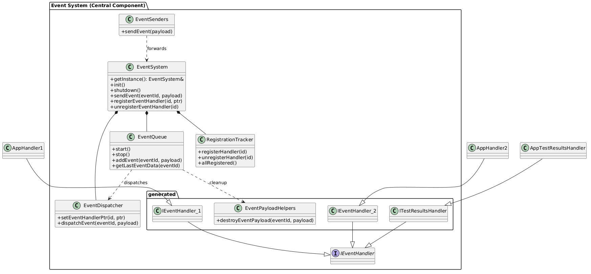
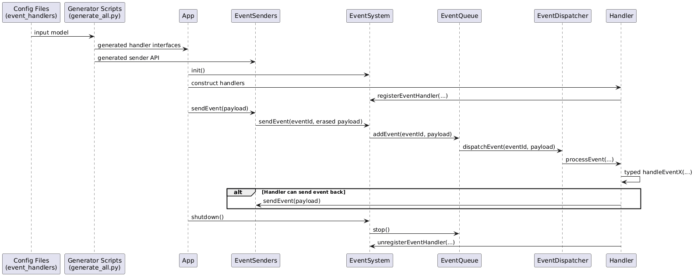

Static Event System
This module is a generation-driven event system.
The main goal is to keep user-facing APIs small and clear while moving infrastructure complexity to generated code and core internals.
Why this approach
Compared to runtime-only registration models, this design gives:
- Stronger compile-time contracts for handlers.
- Predictable startup semantics: system starts processing only after all expected handlers are registered.
- Cleaner user includes: user code mostly consumes system/EventSenders.hpp, generated handler interfaces, and payload types.
High-Level Flow
- JSON configs define event ids, payload types, queues, and handler subscriptions.
- Python generators render C++ headers/sources from templates.
- User handler classes inherit generated interfaces and implement typed
handleEvent...methods. - User handlers self-register/unregister via helper API.
EventSystemroutes events through queue + dispatcher to registered handlers.
Core Components
This type of system has some similarities with Dynamic Event System
EventSystem- Public facade and lifecycle owner.
-
Coordinates dispatcher, queue, and registration tracker.
-
EventQueue - Worker-thread queue and dispatch loop.
-
Stores last event payload per event type.
-
EventDispatcher - Maps event id -> list of handler ids.
-
Calls handler
processEvent(...)if registered. -
RegistrationTracker - Tracks which generated handlers are registered.
-
Declares
allRegistered()and provides watchdog logging for missing handlers. -
Generated interfaces (
generated/include/handlers/*) - One interface per configured handler.
-
Each interface has typed
handleEvent...methods. -
Generated send API (
generated/include/system/EventSenders.hpp) - User-oriented event send helpers.
- Hides payload erasure details.
Include Surface Layout
- User-oriented
event_system/generated/include/system/EventSenders.hppevent_system/include/system/EventSystem.hppevent_system/generated/include/handlers/*-
event_system/generated/include/types/* -
Core/internal
event_system/include/core/*event_system/generated/include/core/*
Only EventSenders stays in generated system include folder. Core ids and helpers are intentionally moved under core.
Config Files and Why They Matter
Config directory: event_system/configs
events_enum.json- Numeric event ids.
-
Source of generated enums for event ids.
-
events_types.json - Payload type model and event -> payload mapping.
-
Drives generated payload type headers and sender/handler signatures.
-
event_handlers.json - Handler names, subscriptions, queue assignments.
- Drives generated handler interfaces and event-to-handler map builder.
Benefits of config-first setup:
- Single source of truth for event contracts.
- Repeatable generation with low manual drift.
- Easier review of API changes through JSON diffs.
How to Implement Handlers
- Generate interfaces.
- In
app/include/app/handlers, create concrete classes inheriting generated interfaces. - Implement all required typed
handleEvent...methods. - Register in constructor, unregister in destructor.
- Instantiate handlers in your top-level
Appobject so their lifetime is process-scoped.
Typical pattern:
class EventHandler1 final : protected event_system::IEventHandler_1
{
public:
EventHandler1();
~EventHandler1();
private:
void handleEventTimestamp(const event_system::Timestamp& payload) override;
void handleEventEventSystemReady() override;
};
How to Generate Interfaces and Sources
From event_system directory:
python3 scripts/generate_all.py --root .
Or individually:
python3 scripts/generate_static_headers.py --root .
python3 scripts/generate_event_handlers_map_builder.py --root .
python3 scripts/generate_event_handlers.py --root .
Build and Run
From StaticEventSystem directory:
cmake -S . -B build
cmake --build build
./build/app/test_app
Stop with Ctrl+C.
Architecture
Class Diagram

Sequence Diagram

Positive Sides
- Strong typed handler contracts.
- Deterministic startup gate through registration completeness.
- Cleaner user-facing include suggestions.
- Config-driven API evolution.
Negative Sides / Risks
- Generation pipeline adds tooling complexity.
- Bad templates can break many generated files at once.
- Concurrency-sensitive internals still need careful hardening.
- Refactors require synchronized changes in scripts + templates + runtime.
Can it be better?
Yes. Future improvements:
- Generate more runtime internals (queue and registration policy) from config.
- Add schema validation for config files before generation.
- Add CI checks to enforce generator determinism and compile outputs.
- Introduce integration tests for startup/shutdown and unregister semantics.